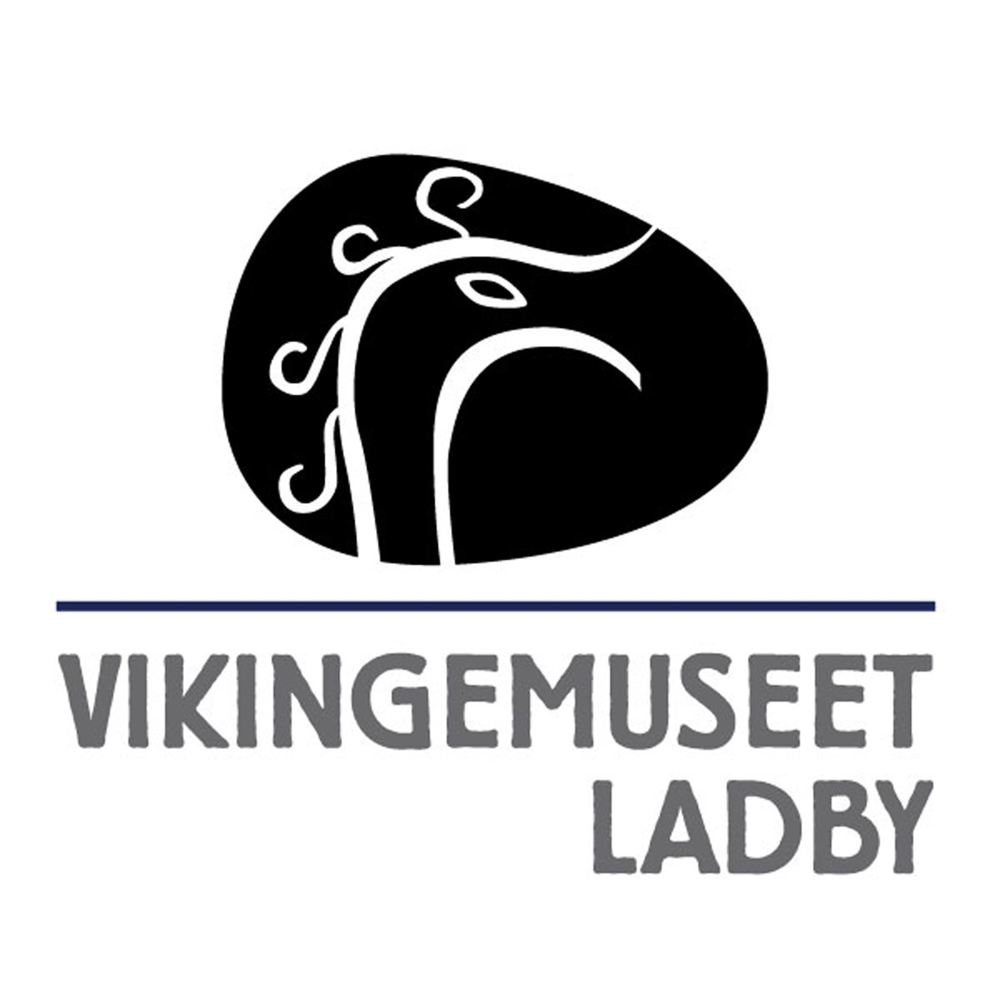
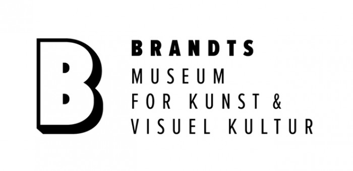
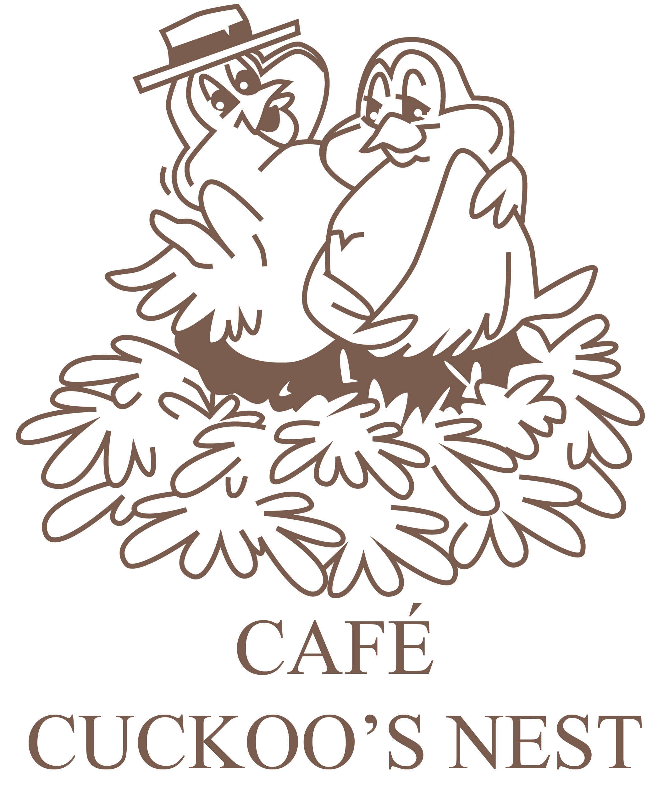

Odense Zoo

Odense Zoo is one of Denmark's oldest and most popular zoological gardens. Located in the heart of Odense, this zoo offers a unique experience where visitors can get close to and learn about various animal species from around the world. With more than 150 different species and around 2000 animals, Odense Zoo is an oasis for both animal lovers and those who wish to explore the world of animals.
Learn MoreViking Museum Ladby
In 1934-35, Denmark's first Viking ship was excavated at Ladby near Kerteminde Fjord. The excavation of the Ladby Ship was a world sensation, and thousands of visitors flocked from both home and abroad. With support from excavator Poul Helweg Mikkelsen, a concrete vault was erected over the excavated ship grave, preserving it at the discovery site exactly as the archaeologists left it. In 1937, "Denmark's most remarkable maritime museum" was opened to the public.
Learn MoreArtmuseum Brandst
At the Artmuseum Brandst, we have a variety of art pieces, sculptures and bigger exhibitions. Currently one of our biggest exhibitions is called "Kids" which showcases the world from a childs perspective. Come to the museum and experience tons of culture in the form of art.
Learn MoreCafé Cuckoo's Nest

Café Cuckoo's is located in the heart of Odense City, on Vestergade at the entrance to Brandt's Passage.
If you're looking for a café in Odense to meet over a quick cup of coffee, enjoy a delicious brunch, or savor a brasserie dining experience, then Cuckoo's is the perfect place. We look forward to welcoming you.
Come in and enjoy the weekend at Cuckoo's with a delightful brunch. We look forward to receiving you:
Saturday/Sunday from 10:00 to 13:00.
Eydes Odense
Eydes has plenty of food for everyone, all from brunch to a nice and warm christmas dinner. We have a nice atmosphere that gives a warm feeling of home and love to give every guest an experience of great food and awesome service.
Learn More